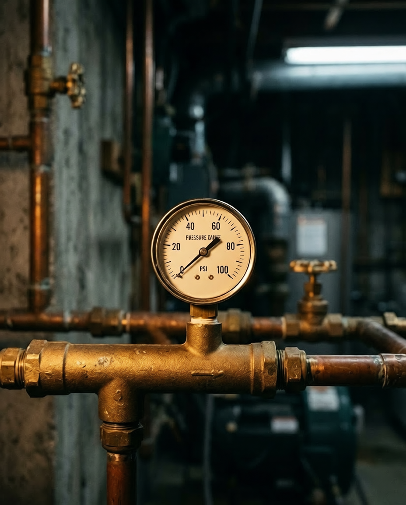

§ I. — The Diagnostic
A Gauge /at the manifold.
Ninety minutes on site, every fixture walked, the main drain scoped from the access stack to the city connection. Static and dynamic pressure read at the meter, at the manifold, and at the furthest run. The report — photographs, readings, prioritised findings — leaves with the homeowner the same day.
Duration · 90 min
Tools · HD Scope, Manometer
Output · Bound Written Report